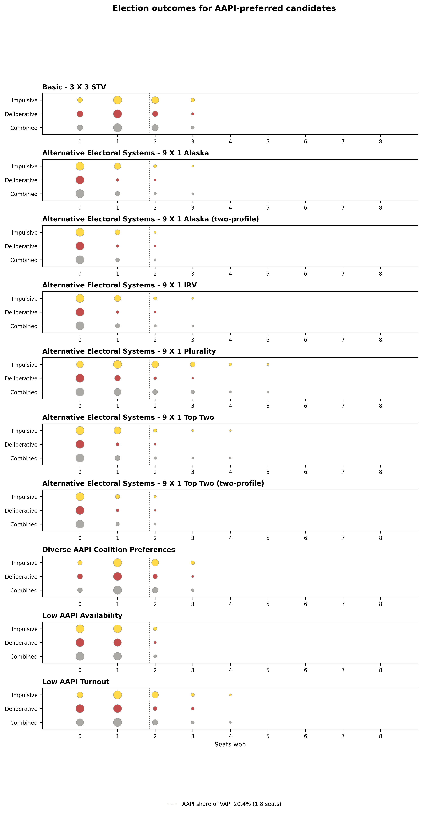

Abstract
[Abstract to be written.]
1. Background
[Background to be written.]
2. Data
2.1 Data units, collection, preprocessing
[Data sources and preprocessing to be written.]
2.2 Racial demographics
Table 1. San Diego population and voting-age population (VAP) by racial/ethnic group, 2020 Census, summed over the 11,018 blocks in the study geography.
| Group | Population | % of Total Pop. | VAP | % of VAP |
|---|---|---|---|---|
| White (non-Hispanic) | 565,133 | 40.7% | 492,810 | 43.8% |
| Hispanic/Latino | 399,934 | 28.8% | 298,979 | 26.6% |
| Asian / Native Hawaiian & Pacific Islander | 285,783 | 20.6% | 229,884 | 20.4% |
| Black | 106,863 | 7.7% | 79,988 | 7.1% |
| American Indian / Alaska Native | 10,612 | 0.8% | 8,833 | 0.8% |
| Some Other Race | 18,632 | 1.3% | 14,593 | 1.3% |
| Total | 1,386,957 | 100% | 1,125,087 | 100% |
3. Methodology
3.1 Districting Plan Ensembles
[Ensemble generation to be written.]
- 9 × 1 ensemble — each plan has 9 single-member districts, matching San Diego's current council structure
- 3 × 3 ensemble — each plan has 3 three-member districts, for a 9-seat council elected by STV
3.2 Voter Blocs and Candidate Slates
Table 2. Voter blocs, the demographic groups each aggregates, and the default turnout weight applied to each.
| Bloc | Demographic groups (VAP) | Slate size | Default turnout |
|---|---|---|---|
| WHI | White | 4 candidates | 1.00 |
| HIS | Hispanic/Latino | 3 candidates | 0.75 |
| AAPI | Asian / Native Hawaiian & Pacific Islander | 2 candidates | 0.75 |
| BAIO | Black + American Indian + Other race | 2 candidates | 1.00 |
Table 3. Cohesion matrix: rows are voter blocs, columns are candidate slates, and each row sums to 1.
| bloc ↓ / slate → | WHI | HIS | AAPI | BAIO |
|---|---|---|---|---|
| WHI | 0.80 | 0.05 | 0.10 | 0.05 |
| HIS | 0.10 | 0.80 | 0.05 | 0.05 |
| AAPI | 0.15 | 0.03 | 0.80 | 0.02 |
| BAIO | 0.05 | 0.10 | 0.05 | 0.80 |
3.3 Candidate Availability and Pool Size
[Candidate pool sampling to be written.]
3.4 Voter Profile and Ballot Generation
[Ballot generation to be written.]
The Impulsive Voter
[Plackett-Luce description to be written.]
The Deliberative Voter
[Bradley-Terry description to be written.]
3.5 Voting Rules
Table 4. Voting rules simulated in this report, the district configurations they are applied to, and their parameters.
| Voting Rule | District Config | Seats/District | Parameters |
|---|---|---|---|
| Plurality | 9 × 1 | 1 | random tiebreak |
| IRV (Instant-Runoff Voting) | 9 × 1 | 1 | random tiebreak |
| Alaska (top-four primary → IRV) | 9 × 1 | 1 | $m_1 = 4$, $m_2 = 1$, random tiebreak |
| Top Two | 9 × 1 | 1 | random tiebreak |
| Alaska, two-profile | 9 × 1 | 1 | $m_1 = 4$, round 2 = STV (1 seat), ballots regenerated between rounds |
| Top Two, two-profile | 9 × 1 | 1 | $m_1 = 2$, round 2 = Plurality (1 seat), ballots regenerated between rounds |
| STV (Single Transferable Vote) | 3 × 3 | 3 | 3 seats, random tiebreak |
4. Election Scenarios
Table 5. Number of district-level elections produced by each district configuration, per voting rule.
| District Configuration | Districts / Plan | Sampled Plans | Replicates | Voter Models | Elections / Rule |
|---|---|---|---|---|---|
| 9 × 1 | 9 | 100 | 10 | 2 | 18,000 |
| 3 × 3 | 3 | 100 | 10 | 2 | 6,000 |
4.1 Alternative Electoral Systems — 9 × 1


4.2 Multi-Member Districts — 3 × 3 STV


4.3 Turnout and Candidate Availability


4.4 Diverse AAPI Coalition Preferences


4.5 Cross-Run Comparison

Appendix
A. Configuration Reference
Table 6. Full list of simulated runs and the configuration parameters that distinguish them. All runs sample 100 plans, use 10 replicates and both voter models, and draw candidate pool sizes from a geometric distribution with $p = 0.2$.
| Run Name | Districts | Seats | Voting Rules | Turnout (WHI / HIS / AAPI / BAIO) | Departure from baseline |
|---|---|---|---|---|---|
| Basic – 3 × 3 STV | 3 × 3 | 9 | STV (3 seats) | 1.00 / 0.75 / 0.75 / 1.00 | — (baseline) |
| Alternative Electoral Systems | 9 × 1 | 9 | Plurality, IRV, Alaska, Top Two, Alaska two-profile, Top Two two-profile | 1.00 / 0.75 / 0.75 / 1.00 | Single-member districts |
| Low AAPI Turnout | 3 × 3 | 9 | STV (3 seats) | 1.00 / 0.75 / 0.50 / 1.00 | AAPI turnout lowered to 0.50 |
| Low AAPI Availability | 3 × 3 | 9 | STV (3 seats) | 1.00 / 0.75 / 0.75 / 1.00 | Availability exponents 2 / 2 / 3 / 2, shrinking the AAPI slate |
| Diverse AAPI Coalition Preferences | 3 × 3 | 9 | STV (3 seats) | 1.00 / 0.75 / 0.75 / 1.00 | AAPI Dirichlet alpha for the AAPI slate raised to 2 |